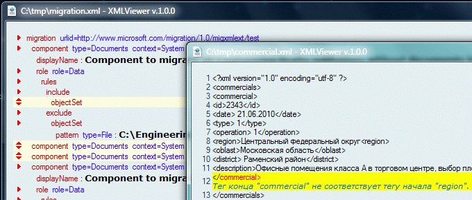

XML Viewer

Данное HTA-приложение позволяет осуществлять простой и наглядный просмотр XML файлов.
В случае ошибки демонстрирует необработанный xml текст с подсветкой строки и символа на котором возникла ошибка.
Замечания к использованию
- При запуске программа предлагает зарегистрировать себя для открытия XML файлов. Если пользователь отвечает согласием, то в каталоге программы образуется файл return_xml_association.reg, который позволит восстановить параметры реестра после удаления программы.
- Никаких ухищрений для защиты от дебильных антивирей не предпринималось, поэтому если пользуетесь одним из них, заносите программу в список исключений.
Ссылки
Лицензионное соглашение
Приложение распостраняется по лицензии GPL.
Вы можете использовать его совершенно свободно без всяких ограничений.
Данные для обратной связи находятся в коде заголовка HTA приложения.
mozers™